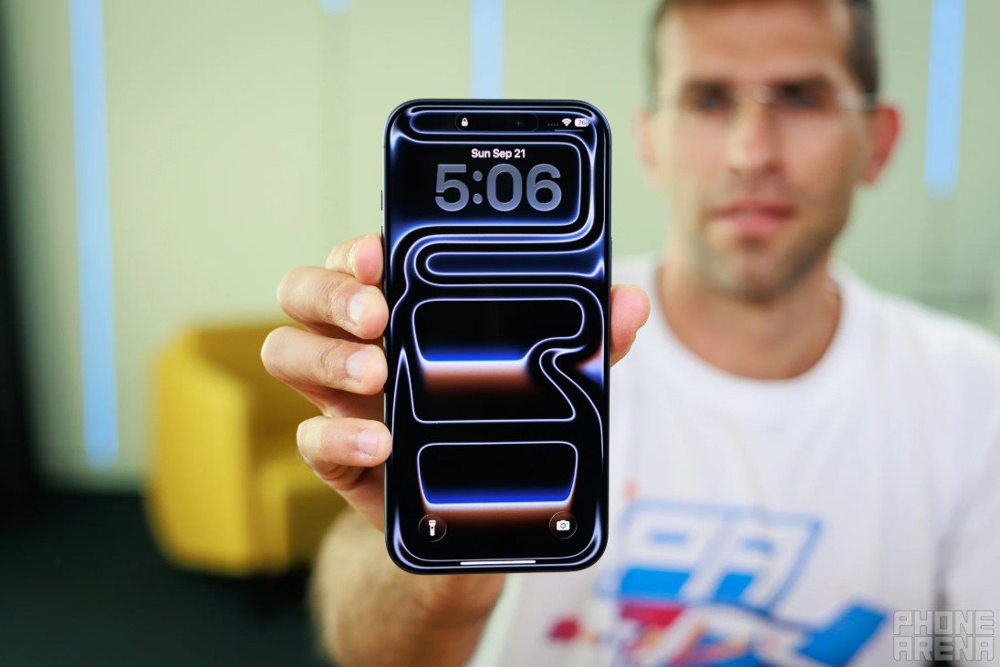

Apple thường tích hợp màn hình tốt nhất trên thị trường cho điện thoại thông minh. Mặc dù iPhone 17 Pro có thể đạt được độ sáng tối đa khá tốt nhưng việc duy trì độ sáng đó trong thời gian dài lại là một thách thức. Tin đồn mới nhất cho thấy, màn hình của iPhone 18 Pro cũng không khá hơn là bao.

